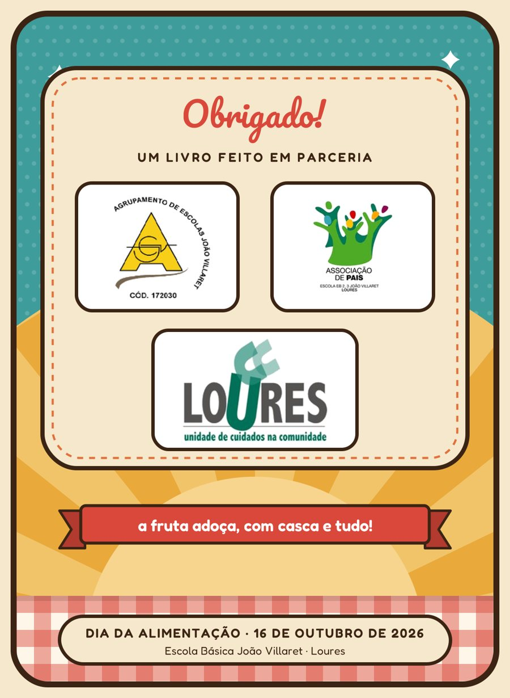

<title>Doces sem açúcar</title>
<meta name="claude:viewport-fit-sides" content="cover">
<link rel="preconnect" href="https://fonts.googleapis.com">
<link rel="preconnect" href="https://fonts.gstatic.com" crossorigin>
<link rel="stylesheet" href="https://fonts.googleapis.com/css2?family=Pacifico&family=Fredoka:wght@400;500;600&family=Nunito+Sans:opsz,wght@6..12,400;6..12,600;6..12,700&display=swap">
<style>
/* Layout: caderno de receitas retro de uma coluna, cartões de receita em grelha que passa a uma coluna no telemóvel */
:root {
  --paper: #FFF8EC; --card: #FFFFFF; --cream: #F6E8CC; --ink: #3B2414; --ink-soft: #6E5440;
  --teal: #2F8B89; --cherry: #C93A2E; --mustard: #E3A23A; --line: #E9D9BF; --chip: #F6E8CC;
  --display: "Pacifico", "Brush Script MT", cursive;
  --label: "Fredoka", "Trebuchet MS", system-ui, sans-serif;
  --body: "Nunito Sans", "Segoe UI", system-ui, sans-serif;
  --lift: 0%;
}
@media (prefers-color-scheme: dark) { :root:not([data-theme="light"]) {
  --paper: #22180F; --card: #2E2217; --cream: #3A2B1D; --ink: #F5E8D2; --ink-soft: #C9B396;
  --teal: #5FC2BF; --cherry: #F0705F; --mustard: #F0B95A; --line: #4A3826; --chip: #3A2B1D; --lift: 55%; color-scheme: dark } }
:root[data-theme="dark"] {
  --paper: #22180F; --card: #2E2217; --cream: #3A2B1D; --ink: #F5E8D2; --ink-soft: #C9B396;
  --teal: #5FC2BF; --cherry: #F0705F; --mustard: #F0B95A; --line: #4A3826; --chip: #3A2B1D; --lift: 55%; color-scheme: dark }

* { box-sizing: border-box; }
body { background: var(--paper); color: var(--ink); font-family: var(--body); font-size: 17px; line-height: 1.55;
  -webkit-text-size-adjust: 100%; }
body::before { content: ""; position: fixed; inset: 0 0 auto; height: env(safe-area-inset-top, 0px); z-index: 10; background: var(--teal); }
.wrap { max-width: 760px; margin: 0 auto; padding-left: max(16px, env(safe-area-inset-left, 0px)); padding-right: max(16px, env(safe-area-inset-right, 0px)); }
h1, h2 { font-family: var(--display); font-weight: 400; color: var(--cherry); line-height: 1.25; text-wrap: balance; margin: 0; }
h3 { font-family: var(--label); font-weight: 600; color: var(--teal); margin: 1.4em 0 .4em; font-size: 1.08rem; }
a { color: var(--teal); }
button { font: inherit; color: inherit; cursor: pointer; }
:focus-visible { outline: 3px solid var(--mustard); outline-offset: 2px; border-radius: 6px; }

/* barra superior */
.bar { position: sticky; top: env(safe-area-inset-top, 0px); z-index: 5; background: var(--teal); color: #fff;
  border-bottom: 4px solid var(--ink); }
.bar .wrap { display: flex; align-items: center; gap: 10px; min-height: 56px; }
.bar .brand { font-family: var(--display); font-size: 1.35rem; color: #fff; text-decoration: none; white-space: nowrap; }
.bar .back { display: inline-flex; align-items: center; gap: 6px; background: rgba(255,255,255,.16); border: 0; border-radius: 999px;
  padding: 6px 14px 6px 10px; font-family: var(--label); font-weight: 500; color: #fff; }
.bar .back[hidden] { display: none; }
.bar .spacer { flex: 1; }

/* capa */
.hero { background: var(--teal); background-image: radial-gradient(rgba(255,255,255,.18) 1.6px, transparent 1.8px); background-size: 16px 16px;
  border-bottom: 4px solid var(--ink); }
.hero .wrap { padding-block: 26px 30px; display: grid; gap: 18px; justify-items: center; text-align: center; }
.badge { background: var(--cream); border: 4px solid var(--ink); border-radius: 44px; padding: 16px 26px 14px; box-shadow: 0 6px 0 rgba(0,0,0,.18); max-width: 100%; }
.badge h1 { font-size: clamp(2.3rem, 9vw, 3.4rem); }
.badge p { margin: 4px 0 0; font-family: var(--label); font-weight: 600; letter-spacing: .18em; text-transform: uppercase; font-size: .78rem; color: var(--ink); }
.ribbon { background: var(--cherry); color: #fff; border: 3px solid var(--ink); border-radius: 6px; padding: 6px 18px; font-family: var(--label); font-weight: 600; }
.hero .sub { color: #fff; font-family: var(--label); font-size: .95rem; margin: 0; }

section.block { padding-block: 26px 8px; }
.sechead { display: flex; align-items: baseline; justify-content: space-between; gap: 12px; margin-bottom: 14px; }
.sechead h2 { font-size: 1.9rem; }
.sechead span { font-family: var(--label); color: var(--ink-soft); font-size: .9rem; }

/* filtro */
.filters { display: flex; flex-wrap: wrap; gap: 8px; margin: 0 0 16px; }
.filters button { border: 2px solid var(--ink); background: var(--card); border-radius: 999px; padding: 5px 13px; font-family: var(--label); font-size: .88rem; }
.filters button[aria-pressed="true"] { background: var(--ink); color: var(--paper); }

/* cartões */
.grid { display: grid; grid-template-columns: repeat(auto-fill, minmax(220px, 1fr)); gap: 16px; }
.rcard { display: grid; grid-template-rows: auto 1fr; text-decoration: none; color: inherit; background: var(--card); border: 3px solid var(--ink);
  border-radius: 18px; overflow: hidden; transition: transform .15s ease; }
.rcard:hover { transform: translateY(-3px); }
.rcard img { display: block; width: 100%; aspect-ratio: 800/460; object-fit: cover; border-bottom: 3px solid var(--ink); }
.rcard .t { padding: 10px 14px 14px; display: grid; gap: 6px; align-content: start; }
[style*="--c"] { --ct: color-mix(in srgb, var(--c), #fff var(--lift)); }
.rcard .t b { font-family: var(--label); font-weight: 600; font-size: 1.05rem; line-height: 1.25; color: var(--ct); }
.rcard .t small { color: var(--ink-soft); font-size: .86rem; }
.empty { padding: 16px; border: 2px dashed var(--line); border-radius: 14px; color: var(--ink-soft); }

.reads { display: grid; gap: 10px; }
.reads a { display: flex; align-items: center; justify-content: space-between; gap: 10px; background: var(--card); border: 2px solid var(--line);
  border-radius: 14px; padding: 14px 16px; text-decoration: none; color: var(--ink); font-family: var(--label); font-weight: 500; }
.reads a::after { content: "›"; font-size: 1.4rem; color: var(--cherry); line-height: 1; }
.partners { padding-block: 26px 40px; text-align: center; }
.partners img { width: min(420px, 100%); border-radius: 22px; }

/* receita */
.rhead { padding-block: 18px 6px; display: grid; gap: 12px; }
.rhead img { width: 100%; border-radius: 18px; border: 3px solid var(--ink); }
.rhead h1 { font-size: clamp(1.9rem, 7.5vw, 2.6rem); color: var(--ct); }
.desc { margin: 0; font-style: italic; color: var(--ink-soft); }
.pills { display: flex; flex-wrap: wrap; gap: 8px; }
.pill { background: var(--chip); border: 2px solid var(--ink); border-radius: 999px; padding: 3px 12px; font-size: .88rem; }
.pill b { font-family: var(--label); font-weight: 600; }
.al { display: flex; flex-wrap: wrap; gap: 6px; }
.al span { font-family: var(--label); font-size: .8rem; border-radius: 6px; padding: 2px 8px; border: 1.5px solid var(--line); color: var(--ink-soft); }
.al span.yes { border-color: var(--cherry); color: var(--cherry); }
.panel { background: var(--card); border: 2px solid var(--line); border-top: 6px solid var(--c); border-radius: 16px; padding: 14px 16px 10px; margin-top: 16px; }
.panel h2 { font-family: var(--label); font-weight: 600; font-size: .95rem; letter-spacing: .14em; text-transform: uppercase; color: var(--ct); margin-bottom: 8px; }
.panel .hint { font-size: .82rem; color: var(--ink-soft); margin: -4px 0 8px; }
.ingr { list-style: none; margin: 0; padding: 0; }
.ingr li + li { border-top: 1px dashed var(--line); }
.ingr label { display: flex; gap: 12px; align-items: flex-start; padding: 9px 2px; cursor: pointer; }
.ingr input { appearance: none; flex: none; width: 22px; height: 22px; margin-top: 2px; border: 2px solid var(--ct); border-radius: 6px; display: grid; place-items: center; background: var(--card); }
.ingr input:checked { background: var(--c); }
.ingr input:checked::after { content: ""; width: 6px; height: 11px; border: solid #fff; border-width: 0 3px 3px 0; transform: rotate(45deg) translate(-1px,-1px); }
.ingr input:checked + span { text-decoration: line-through; color: var(--ink-soft); }
.steps { margin: 0; padding: 0; list-style: none; counter-reset: s; }
.steps li { counter-increment: s; display: grid; grid-template-columns: 34px 1fr; gap: 10px; padding: 9px 0; }
.steps li + li { border-top: 1px dashed var(--line); }
.steps li::before { content: counter(s); width: 30px; height: 30px; border-radius: 50%; background: var(--c); color: #fff; display: grid; place-items: center;
  font-family: var(--label); font-weight: 600; }
.tip { margin-top: 16px; border: 2.5px dashed var(--ct); border-radius: 16px; padding: 12px 16px; }
.tip strong { display: inline-block; font-family: var(--label); font-weight: 600; background: var(--c); color: #fff; border-radius: 8px; padding: 1px 10px; font-size: .8rem; letter-spacing: .08em; text-transform: uppercase; margin-bottom: 6px; }
.tip p { margin: 0; }
.credit { text-align: right; font-family: var(--label); color: var(--ct); margin: 10px 0 0; }
.tools { display: flex; flex-wrap: wrap; gap: 10px; margin-top: 18px; }
.tools button { border: 2px solid var(--ink); background: var(--card); border-radius: 999px; padding: 8px 16px; font-family: var(--label); font-weight: 500; }
.tools button[aria-pressed="true"] { background: var(--mustard); color: #3B2414; }
.tools small { flex-basis: 100%; color: var(--ink-soft); font-size: .82rem; }
.pager { display: grid; grid-template-columns: 1fr 1fr; gap: 10px; padding-block: 22px 40px; }
.pager a { display: grid; gap: 2px; text-decoration: none; color: var(--ink); background: var(--card); border: 2px solid var(--line); border-radius: 14px; padding: 10px 14px; min-width: 0; }
.pager a small { font-family: var(--label); color: var(--ink-soft); font-size: .78rem; }
.pager a span { font-family: var(--label); font-weight: 500; overflow-wrap: anywhere; }
.pager a.next { text-align: right; grid-column: 2; }

/* capítulos */
.read { padding-block: 20px 40px; }
.read h1 { font-size: clamp(1.9rem, 7.5vw, 2.5rem); margin-bottom: 12px; }
.read p, .read li { max-width: 65ch; }
.read ul, .read ol { padding-left: 1.3em; }
.read li { margin-bottom: .35em; }
.tbl { overflow-x: auto; margin: 10px 0 16px; border: 2px solid var(--ink); border-radius: 12px; }
.tbl table { border-collapse: collapse; width: 100%; font-size: .9rem; min-width: 520px; }
.tbl th { background: var(--teal); color: #fff; font-family: var(--label); font-weight: 600; text-align: left; padding: 8px 10px; }
.tbl td { padding: 8px 10px; border-top: 1px solid var(--line); vertical-align: top; }
.tbl tr:nth-child(even) td { background: var(--chip); }
.share { display: flex; flex-wrap: wrap; align-items: center; justify-content: space-between; gap: 14px 20px;
  background: var(--cream); border: 3px solid var(--ink); border-radius: 22px; padding: 18px 20px; }
.share > div { flex: 1 1 280px; min-width: 0; }
.share h2 { font-size: 1.6rem; }
.share p { margin: 6px 0 0; }
.cta { display: inline-block; background: var(--cherry); color: #fff; border: 3px solid var(--ink); border-radius: 999px; padding: 10px 20px;
  font-family: var(--label); font-weight: 600; text-decoration: none; box-shadow: 0 4px 0 var(--ink); }
.cta:active { transform: translateY(2px); box-shadow: 0 2px 0 var(--ink); }
.sharelink { flex-basis: 100%; font-family: var(--label); font-weight: 500; color: var(--ct); }
.foot { text-align: center; padding-block: 0 34px; color: var(--ink-soft); font-size: .85rem; font-family: var(--label); }
@media (prefers-reduced-motion: reduce) { .rcard { transition: none; } .rcard:hover { transform: none; } }
</style>

<header class="bar"><div class="wrap">
  <a class="brand" href="#">Doces sem açúcar</a>
  <span class="spacer"></span>
  <button class="back" id="back" type="button" hidden>‹ Receitas</button>
</div></header>
<main id="app"></main>

<script>
const DATA = {"recipes": [{"id": "bolo-mole-de-banana-e-coco", "title": "Bolo mole de banana e coco", "desc": "Um bolo húmido e cremoso, quase pudim, adoçado com banana madura.", "meta": {"Tempo": "10 min de preparação + 35 min de forno", "Forno": "180 °C", "Doses": "8 fatias"}, "img": "img/bolo-mole.jpg", "color": "#3E9C9A", "ingr": ["3 ovos", "3 bananas bem maduras (com pintas) ou 3 colheres de sopa de mel", "1 chávena de farinha de trigo", "3 chávenas de leite", "200 ml de leite de coco", "3 colheres de sopa de manteiga derretida", "Coco ralado sem açúcar q.b.", "Manteiga e farinha para a forma"], "prep": ["Ligar o forno a 180 °C. Untar a forma com manteiga e polvilhar com farinha.", "Esmagar as bananas com um garfo até ficarem em puré (se usar mel, saltar este passo).", "Juntar todos os ingredientes e bater muito bem, até a massa ficar lisa.", "Deitar na forma e polvilhar com coco ralado.", "Levar ao forno cerca de 35 minutos, até estar firme por cima.", "Deixar arrefecer antes de desenformar: o bolo fica mole por dentro."], "tip": "Quanto mais madura a banana, mais doce fica o bolo. As crianças podem esmagar a banana e polvilhar o coco.", "credit": "", "allerg": {"gluten": "Sim", "lactose": "Sim", "ovo": "Sim", "frutos": "—"}}, {"id": "brownie-de-cacau-e-banana", "title": "Brownie de cacau e banana", "desc": "Um bolo de chocolate escuro e fofo, adoçado com banana.", "meta": {"Tempo": "10 min de preparação + 25 min de forno", "Forno": "180 °C", "Doses": "12 quadrados"}, "img": "img/brownie.jpg", "color": "#E2703A", "ingr": ["6 ovos", "2 bananas bem maduras ou 2 colheres de sopa de mel", "1 chávena de farinha", "1 embalagem de cacau em pó 100%, sem açúcar", "1 colher de chá de fermento", "1 chávena de água quente", "Manteiga e farinha para o tabuleiro"], "prep": ["Ligar o forno a 180 °C. Untar o tabuleiro com manteiga e polvilhar com farinha.", "Esmagar as bananas com um garfo.", "Juntar os ovos, a banana, a farinha, o cacau e o fermento. Bater muito bem.", "No fim, juntar a água quente e mexer até a massa ficar lisa e brilhante.", "Deitar no tabuleiro e levar ao forno cerca de 25 minutos.", "Deixar arrefecer e cortar em quadrados."], "tip": "Escolher cacau em pó 100%, e não \"chocolate em pó\", que costuma ter muito açúcar. Ler sempre o rótulo.", "credit": "", "allerg": {"gluten": "Sim", "lactose": "—", "ovo": "Sim", "frutos": "—"}}, {"id": "bolo-de-banana-e-canela", "title": "Bolo de banana e canela", "desc": "Um bolo de forma simples e perfumado, com farinha de espelta e sem lacticínios.", "meta": {"Tempo": "10 min de preparação + 25 min de forno", "Forno": "170 °C com ventilação", "Doses": "10 fatias"}, "img": "img/bolo-banana.jpg", "color": "#D9483B", "ingr": ["2 a 3 bananas bem maduras", "4 ovos", "2 chávenas de farinha de espelta", "1 chávena de bebida de aveia (sem açúcar)", "40 ml de óleo de coco", "1 colher de sopa de canela em pó", "1 colher de chá de fermento em pó", "Óleo de coco e farinha para a forma"], "prep": ["Ligar o forno a 170 °C, com ventilação. Untar a forma com óleo de coco e polvilhar com farinha.", "Esmagar as bananas e misturar com os ovos, o óleo de coco e a bebida de aveia.", "Juntar a farinha, a canela e o fermento. Envolver até a massa ficar homogénea.", "Deitar na forma e levar ao forno cerca de 25 minutos.", "Espetar um palito no centro: se sair seco, o bolo está pronto."], "tip": "Guardar meia banana cortada ao comprido para pôr por cima antes de ir ao forno. Fica bonito e as crianças adoram.", "credit": "Adaptado de uma receita do Intermarché, da consultora nutricional Lillian Barros.", "allerg": {"gluten": "Sim (espelta)", "lactose": "—", "ovo": "Sim", "frutos": "—"}}, {"id": "bolo-de-banana-com-mel-nozes-e-cacau", "title": "Bolo de banana com mel, nozes e cacau", "desc": "Um bolo de aveia, sem lactose, com pedacinhos de chocolate negro e nozes. Tudo se bate no liquidificador.", "meta": {"Tempo": "10 min de preparação + 30 a 40 min de forno", "Forno": "180 °C", "Doses": "10 fatias"}, "img": "img/bolo-nozes.jpg", "color": "#7A8B3C", "ingr": ["250 g de flocos de aveia", "4 bananas maduras", "4 ovos", "½ chávena de azeite", "2 colheres de sopa de mel", "½ colher de sopa de fermento", "1 colher de chá de canela", "½ chávena de nozes picadas", "50 g de chocolate 90% cacau, partido em pedaços"], "prep": ["Ligar o forno a 180 °C e untar uma forma.", "No liquidificador, bater todos os ingredientes, exceto o chocolate e as nozes.", "Passar a massa para uma taça e envolver o chocolate e as nozes.", "Deitar na forma e levar ao forno 30 a 40 minutos, até alourar."], "tip": "O chocolate 90% cacau tem muito pouco açúcar; confirmar no rótulo. Para ser sem glúten, usar flocos de aveia com a indicação \"sem glúten\". Atenção: contém frutos secos.", "credit": "", "allerg": {"gluten": "Aveia\\*", "lactose": "—", "ovo": "Sim", "frutos": "Sim"}}, {"id": "mousse-de-chocolate-saudavel", "title": "Mousse de chocolate saudável", "desc": "Uma mousse cremosa feita com banana e abacate, sem forno e pronta na hora.", "meta": {"Tempo": "10 min", "Forno": "não precisa", "Doses": "6 taças"}, "img": "img/mousse.jpg", "color": "#2F5D7C", "ingr": ["3 bananas maduras", "3 abacates maduros", "2 colheres de sopa de cacau em pó 100%, sem açúcar", "Mel a gosto (opcional)", "Frutos secos triturados, para decorar (opcional)"], "prep": ["Cortar as bananas aos pedaços para uma taça.", "Abrir os abacates ao meio e retirar a polpa com uma colher. Juntar à banana.", "Acrescentar o cacau e, se quiser, o mel.", "Triturar tudo com a varinha mágica ou o processador até ficar cremoso.", "Servir em taças e polvilhar com frutos secos triturados."], "tip": "Provar antes de juntar o mel; com bananas bem maduras, muitas vezes não é preciso. Guardar no frigorífico, bem tapada, e comer no próprio dia. Se usar frutos secos, atenção às alergias.", "credit": "Receita da professora Ana Galhardas.", "allerg": {"gluten": "—", "lactose": "—", "ovo": "—", "frutos": "Opcional"}}, {"id": "frutos-secos-afogados-no-chocolate", "title": "Frutos secos \"afogados\" no chocolate", "desc": "Pequenos bombons de chocolate negro com frutos secos. Os mais novos podem fazê-los quase sozinhos.", "meta": {"Tempo": "10 min + 20 min no frigorífico", "Forno": "100 °C, só para amolecer", "Doses": "cerca de 20 bombons"}, "img": "img/afogados.jpg", "color": "#B4527F", "ingr": ["1 tablete de chocolate negro (70% cacau ou mais)", "Frutos secos à escolha: nozes, amêndoas, uvas passas"], "prep": ["Forrar um tabuleiro com papel vegetal.", "Partir o chocolate em quadradinhos e distribuí-los pelo tabuleiro, bem separados.", "Levar ao forno a 100 °C durante 3 a 5 minutos, só até o chocolate amolecer.", "Retirar e pôr por cima de cada quadradinho uma mistura de frutos secos, pressionando ligeiramente para \"afogarem\" no chocolate.", "Levar ao frigorífico cerca de 20 minutos, até o chocolate endurecer.", "Descolar do papel e servir."], "tip": "Quanto maior a percentagem de cacau, menos açúcar tem o chocolate; confirmar no rótulo. As passas já são muito doces, por isso bastam umas poucas. Atenção às alergias aos frutos secos.", "credit": "", "allerg": {"gluten": "—", "lactose": "Ver rótulo", "ovo": "—", "frutos": "Sim"}}, {"id": "panquecas-de-banana-e-aveia", "title": "Panquecas de banana e aveia", "desc": "Só quatro ingredientes, uma taça e uma frigideira. Ideais para o pequeno-almoço ou o lanche.", "meta": {"Tempo": "15 min", "Forno": "não precisa", "Doses": "5 a 6 panquecas pequenas"}, "img": "img/panquecas.jpg", "color": "#6C4F8C", "ingr": ["1 banana madura", "1 ovo", "4 colheres de sopa de farinha de aveia", "4 colheres de sopa de bebida vegetal (sem açúcar)", "Um fio de azeite ou óleo de coco para a frigideira"], "prep": ["Esmagar a banana com um garfo até ficar em puré.", "Juntar o ovo, a farinha de aveia e a bebida vegetal. Mexer até a massa ficar homogénea.", "Aquecer uma frigideira antiaderente em lume médio, com um fio de azeite ou óleo de coco.", "Deitar uma colher de sopa de massa por panqueca.", "Cozinhar 1 a 2 minutos, até aparecerem bolhinhas, virar e cozinhar mais 1 minuto."], "tip": "Servir com fruta fresca às rodelas ou iogurte natural. Se não tiver farinha de aveia, basta triturar flocos de aveia na varinha mágica.", "credit": "", "allerg": {"gluten": "Aveia\\*", "lactose": "—", "ovo": "Sim", "frutos": "—"}}, {"id": "bolinhas-energeticas", "title": "Bolinhas energéticas", "desc": "Pequenas bolinhas de frutos secos e chocolate, sem forno. Ótimas para levar na lancheira.", "meta": {"Tempo": "15 min", "Forno": "não precisa", "Doses": "20 a 30 bolinhas"}, "img": "img/bolinhas.jpg", "color": "#2E7D5B", "ingr": ["30 g de flocos de aveia", "70 g de cajus ou amêndoas torrados, sem sal", "40 g de chocolate negro de culinária", "85 g de tâmaras sem caroço, sultanas ou alperces secos", "125 g de manteiga de amendoim 100% amendoim"], "prep": ["Colocar todos os ingredientes no processador.", "Picar até se formar uma pasta que se agarre quando apertada entre os dedos.", "Com as mãos, moldar 20 a 30 bolinhas.", "Guardar no frigorífico, numa caixa fechada."], "tip": "Duram 1 a 2 semanas no frigorífico. Para variar, passar as bolinhas por coco ralado sem açúcar ou cacau em pó. Atenção: contêm amendoim e frutos secos; confirmar se a escola permite antes de pôr na lancheira.", "credit": "", "allerg": {"gluten": "Aveia\\*", "lactose": "Ver rótulo", "ovo": "—", "frutos": "Sim (e amendoim)"}}, {"id": "muffins-de-aveia-e-maca", "title": "Muffins de aveia e maçã", "desc": "Um lanche rápido, sem glúten, sem lactose e adoçado só com maçã. Faz-se tudo no processador.", "meta": {"Tempo": "10 min de preparação + 20 a 25 min de forno", "Forno": "180 °C", "Doses": "10 a 12 muffins"}, "img": "img/muffins.jpg", "color": "#4F9FC4", "ingr": ["2 maçãs bem maduras e doces, mais um pedacinho para decorar", "2 chávenas de flocos de aveia sem glúten", "3 ovos", "2 colheres de sobremesa de fermento em pó", "Canela em pó q.b."], "prep": ["Ligar o forno a 180 °C.", "Picar as maçãs e ralar com a aveia no processador.", "Juntar os ovos e o fermento e bater tudo.", "Acrescentar a canela e distribuir a massa por forminhas de muffins.", "Pôr por cima pedacinhos de maçã e polvilhar com canela.", "Levar ao forno 20 a 25 minutos, até estarem dourados e um palito sair seco."], "tip": "Quanto mais madura e doce a maçã, mais doce fica a massa. Para quem ainda está muito habituado ao açúcar, pode juntar um pouco de mel e ir reduzindo aos poucos.", "credit": "", "allerg": {"gluten": "Aveia\\*", "lactose": "—", "ovo": "Sim", "frutos": "—"}}, {"id": "ahhh-nada-bolinhas-de-banana-e-coco", "title": "Ahhh… nada! Bolinhas de banana e coco", "desc": "A receita mais fácil do livro: um prato, um garfo e cinco minutos. As crianças fazem-na sozinhas.", "meta": {"Tempo": "5 min", "Forno": "não precisa", "Doses": "cerca de 8 bolinhas"}, "img": "img/nada.jpg", "color": "#8C5A3C", "ingr": ["1 banana madura", "Cacau em pó 100%, sem açúcar, q.b.", "1 colher de chá de mel (opcional)", "Coco ralado sem açúcar q.b."], "prep": ["Num prato, esmagar a banana com um garfo.", "Juntar o cacau e o mel e misturar bem.", "Com as mãos, fazer bolinhas.", "Passar as bolinhas pelo coco ralado.", "Está pronto!"], "tip": "Se a massa estiver mole demais para moldar, juntar mais coco ralado ou deixar 15 minutos no frigorífico. Com uma banana bem madura, o mel pode ficar de fora.", "credit": "", "allerg": {"gluten": "—", "lactose": "—", "ovo": "—", "frutos": "—"}}, {"id": "tiramisu-de-chia", "title": "Tiramisu de chia", "desc": "Uma sobremesa fresca, inspirada no tiramisu, sem forno e sem açúcar refinado. A chia faz o trabalho todo no frigorífico.", "meta": {"Tempo": "10 min + pelo menos 4 h no frigorífico", "Forno": "não precisa", "Doses": "4 taças"}, "img": "img/tiramisu.jpg", "color": "#6B4A3A", "ingr": ["500 g de iogurte grego natural, sem açúcar", "4 colheres de sopa de sementes de chia", "1 chávena de café expresso forte, já frio (descafeinado para as crianças)", "1 colher de sopa de mel ou de xarope de tâmara", "Cacau em pó 100%, sem açúcar, para polvilhar"], "prep": ["Fazer o café e deixar arrefecer completamente.", "Numa taça, misturar o iogurte com as sementes de chia.", "Juntar o café aos poucos, mexendo sempre, e depois o mel ou o xarope de tâmara.", "Provar e, se for preciso, ajustar a doçura.", "Distribuir por 4 taças ou frascos, tapar e levar ao frigorífico pelo menos 4 horas, idealmente de um dia para o outro, até ganhar consistência.", "Antes de servir, polvilhar com cacau em pó."], "tip": "Mexer outra vez ao fim de 10 minutos para a chia não ficar em grumos. Para as crianças, usar café descafeinado: o café normal tem cafeína, que não é recomendada na infância. Guarda-se 3 a 4 dias no frigorífico.", "credit": "", "allerg": {"gluten": "—", "lactose": "Sim", "ovo": "—", "frutos": "—"}}, {"id": "bolo-de-chocolate-e-feijao-preto", "title": "Bolo de chocolate e feijão preto", "desc": "Um bolo de chocolate húmido e intenso, sem farinha. Ninguém adivinha que leva feijão!", "meta": {"Tempo": "10 min de preparação + 35 a 40 min de forno", "Forno": "175 °C", "Doses": "8 fatias"}, "img": "img/feijao.jpg", "color": "#556B2F", "ingr": ["250 g de feijão preto cozido e escorrido", "5 ovos", "½ chávena de cacau em pó 100%, sem açúcar", "½ chávena de azeite", "2 colheres de sopa cheias de xarope de tâmara", "1 colher de chá de fermento em pó", "½ colher de chá de bicarbonato de sódio", "1 colher de sopa de extrato de baunilha", "Uma pitada de sal (ver dica)"], "prep": ["Ligar o forno a 175 °C e untar bem uma forma redonda (cerca de 23 cm) com azeite.", "Na liquidificadora ou no processador, triturar o feijão com 3 ovos, a baunilha e o sal até ficar um creme liso, sem pedaços de feijão.", "Juntar os outros 2 ovos e o azeite e triturar de novo.", "Numa taça, misturar o cacau, o fermento e o bicarbonato. Juntar o creme de feijão e o xarope de tâmara e mexer até a massa ficar homogénea.", "Deitar na forma e levar ao forno 35 a 40 minutos, até um palito sair seco.", "Deixar arrefecer completamente antes de desenformar."], "tip": "Em vez do xarope, pode adoçar com 3 ou 4 tâmaras demolhadas e trituradas com o feijão, ou juntar passas. O feijão de lata já tem sal: passar bem por água e não juntar sal.", "credit": "", "allerg": {"gluten": "—", "lactose": "—", "ovo": "Sim", "frutos": "—"}}, {"id": "bolo-red-velvet", "title": "Bolo Red Velvet", "desc": "O clássico americano, sem corantes nem açúcar: o vermelho vem da beterraba e a doçura das tâmaras.", "meta": {"Tempo": "15 min de preparação + 30 min de forno", "Forno": "180 °C", "Doses": "10 a 12 fatias"}, "img": "img/redvelvet.jpg", "color": "#C24A6A", "ingr": ["4 ovos", "250 g de beterraba vermelha crua", "250 g de tâmaras em pó", "250 g de iogurte vegetal natural", "50 ml de azeite", "Sumo e raspa de 1 limão", "1 colher de sopa de psílio em pó", "300 g de farinha de espelta", "1 colher de sopa de cacau cru", "1 colher de sopa de fermento em pó", "Recheio: 200 ml de natas frescas, 1 colher de sopa de mel claro e baunilha"], "prep": ["Ligar o forno a 180 °C. Forrar 2 formas com papel vegetal e untar.", "Bater na liquidificadora todos os ingredientes, exceto a farinha, o cacau e o fermento.", "Peneirar a farinha, o cacau e o fermento e envolver aos poucos na massa.", "Dividir pelas 2 formas e levar ao forno cerca de 30 minutos.", "Bater as natas bem frias com o mel e a baunilha.", "Desenformar, deixar arrefecer e rechear."], "tip": "Na receita original, o recheio levava xilitol. Trocámo-lo por um pouco de mel claro, que mantém as natas brancas, porque neste livro adoçamos com fruta e ingredientes naturais (ver \"E os adoçantes?\").", "credit": "Adaptado da receita do Francisco Freitas, 6.º D.", "allerg": {"gluten": "Sim (espelta)", "lactose": "Sim (natas)", "ovo": "Sim", "frutos": "—"}}], "chapters": [{"id": "ler-introducao", "title": "Introdução", "html": "<p>Este livro nasceu do Dia da Alimentação, celebrado a 16 de outubro de 2026 na Escola Básica João Villaret, com o tema \"doces sem açúcar\".</p>\n<p>Nesse dia, alunos, professores e famílias prepararam e partilharam receitas adoçadas com fruta, que toda a escola pôde provar. O lema foi simples: <em>a fruta adoça, com casca e tudo</em>.</p>\n<p>As receitas foram recolhidas e reunidas aqui para chegarem a casa de cada família. Assim, o que se aprendeu na escola pode continuar na cozinha de todos os dias.</p>\n<p>São receitas simples, com ingredientes fáceis de encontrar. Experimentem-nas com os vossos filhos: cozinhar juntos é uma das melhores formas de as crianças aceitarem novos sabores.</p>"}, {"id": "ler-agradecimentos", "title": "Agradecimentos", "html": "<p>Um agradecimento muito especial aos professores do PES (Promoção e Educação para a Saúde), pela colaboração e pelo empenho nesta parceria que, todos os anos, se desenvolve com a Saúde Escolar.</p>\n<p>Obrigado também aos alunos, à Associação de Pais e a todos os que partilharam as suas receitas.</p>\n<p><em>Equipa de Saúde Escolar · UCC Loures</em></p>"}, {"id": "ler-porque-menos-acucar", "title": "Porquê menos açúcar?", "html": "<p>O açúcar não é um problema só para quem quer perder peso. O excesso afeta a saúde de toda a família, crianças incluídas.</p>\n<ul>\n<li><strong>Dentes:</strong> é a principal causa de cáries.</li>\n<li><strong>Doenças crónicas:</strong> aumenta o risco de diabetes, doenças do coração e dos vasos (hipertensão, AVC) e doença do fígado.</li>\n<li><strong>Inflamação:</strong> tem efeito inflamatório no organismo; a sua relação com alguns tipos de cancro está em estudo.</li>\n<li><strong>Energia:</strong> provoca picos de agitação seguidos de cansaço.</li>\n</ul>\n<h3>Açúcar e cancro: o que se sabe</h3>\n<p>O consumo excessivo de açúcar contribui para o excesso de peso e a obesidade. Estes são fatores de risco reconhecidos para vários tipos de cancro.</p>\n<p>A investigação mostra também que algumas células tumorais dependem muito da glicose para sobreviver. Os cientistas estudam esta característica para desenvolver novos tratamentos.</p>\n<p>Isto não quer dizer que o açúcar da alimentação \"alimente\" diretamente o cancro. Todas as células do corpo usam glicose, e o organismo mantém os níveis no sangue mesmo sem comermos açúcar. Reduzir o açúcar é, acima de tudo, uma forma de prevenção: ajuda a manter um peso saudável e protege a saúde ao longo da vida.</p>\n<h3>O açúcar \"escondido\"</h3>\n<p>Muitos alimentos do dia a dia têm açúcar que não se vê: iogurtes, cereais, bolachas, sumos, molhos. No rótulo, procure a linha <strong>\"Hidratos de carbono, dos quais açúcares\"</strong>. Prefira produtos com a indicação <strong>\"sem açúcar adicionado\"</strong>.</p>\n<p>A Organização Mundial da Saúde recomenda, idealmente, não ultrapassar 25 g de açúcar por dia num adulto, cerca de 6 colheres de chá. Nas crianças, o limite é menor. Antes dos 2 anos, o ideal é não oferecer açúcar adicionado.</p>\n<h3>O açúcar e a vontade de comer doce</h3>\n<p>O açúcar ativa no cérebro os circuitos de recompensa (dopamina e opioides naturais), de forma semelhante ao que acontece com algumas drogas. É isto que alimenta a vontade de repetir e torna difícil parar. Em estudos com animais, o consumo frequente de açúcar provoca comportamentos semelhantes aos de uma dependência.</p>\n<p>Estudos recentes mostram também uma ligação direta entre o intestino e o cérebro que deteta o açúcar, independentemente do sabor doce. Por isso o corpo continua a preferir o açúcar verdadeiro, e os adoçantes não resolvem a vontade de doce.</p>\n<p>As emoções também contam: a ansiedade e o hábito de comer para aliviar emoções estão associados a mais vontade de doce.</p>\n<p>As crianças são ainda mais sensíveis a estes efeitos. Por isso, evite usar doces como prémio ou consolo. A alimentação é uma responsabilidade de todos: educar o paladar é um investimento para a vida.</p>"}, {"id": "ler-como-adocar-sem-acucar", "title": "Como adoçar sem açúcar", "html": "<p>Neste livro, a fruta madura é o adoçante principal. O mel e os xaropes naturais também podem entrar, mas sempre com moderação.</p>\n<h3>O açúcar não é todo igual</h3>\n<table>\n<thead>\n<tr>\n<th>Tipo</th>\n<th>Exemplos</th>\n<th>Como usar</th>\n</tr>\n</thead>\n<tbody>\n<tr>\n<td>Açúcar natural dos alimentos</td>\n<td>Fruta (frutose), leite e iogurte natural (lactose)</td>\n<td>Faz parte de uma alimentação saudável. A fruta inteira traz também fibra, vitaminas e água.</td>\n</tr>\n<tr>\n<td>Açúcares naturais não refinados</td>\n<td>Mel, xarope de ácer, xarope de agave</td>\n<td>Não são refinados, mas são açúcar: aumentam a glicose no sangue e contam para o limite diário. Usar pouco e de vez em quando.</td>\n</tr>\n<tr>\n<td>Açúcar refinado</td>\n<td>Açúcar branco e amarelo, adicionado a bolos, bebidas e produtos embalados</td>\n<td>É o \"mau da fita\". Evitar.</td>\n</tr>\n</tbody>\n</table>\n<p>Atenção: o mel não deve ser dado a bebés com menos de 1 ano.</p>\n<h3>Ingredientes que adoçam</h3>\n<table>\n<thead>\n<tr>\n<th>Ingrediente</th>\n<th>Como usar</th>\n<th>Bom para</th>\n</tr>\n</thead>\n<tbody>\n<tr>\n<td>Banana muito madura (com pintas)</td>\n<td>Esmagada com garfo</td>\n<td>Bolos, panquecas, muffins</td>\n</tr>\n<tr>\n<td>Maçã ou pera</td>\n<td>Assada ou em puré</td>\n<td>Bolos, papas, recheios</td>\n</tr>\n<tr>\n<td>Tâmaras</td>\n<td>Demolhadas e trituradas em pasta</td>\n<td>Bolachas, barras, bolas energéticas</td>\n</tr>\n<tr>\n<td>Passas ou alperce seco</td>\n<td>Picados ou demolhados, em pequena quantidade</td>\n<td>Bolos, granola</td>\n</tr>\n<tr>\n<td>Mel ou xarope de ácer</td>\n<td>Em pequena quantidade, como alternativa à fruta</td>\n<td>Bolos, papas, iogurtes</td>\n</tr>\n<tr>\n<td>Canela</td>\n<td>Uma pitada a uma colher de chá</td>\n<td>Quase tudo</td>\n</tr>\n<tr>\n<td>Baunilha</td>\n<td>Vagem ou extrato puro</td>\n<td>Bolos, cremes, iogurtes</td>\n</tr>\n<tr>\n<td>Coco ralado sem açúcar</td>\n<td>Na massa ou por cima</td>\n<td>Bolachas, bolos</td>\n</tr>\n</tbody>\n</table>\n<h3>E os adoçantes?</h3>\n<p>Os adoçantes não são usados neste livro. A Organização Mundial da Saúde recomenda não os usar para controlar o peso nem para prevenir doenças: a longo prazo não ajudam a perder peso e o seu uso prolongado tem sido associado a mais risco de diabetes tipo 2 e doenças cardiovasculares nos adultos. Esta recomendação não se aplica a pessoas com diabetes.</p>\n<p>Além disso, mantêm o paladar habituado ao muito doce, que é precisamente o que queremos mudar. Se forem usados, que seja de vez em quando e conhecendo as diferenças entre eles.</p>\n<p><strong>Adoçantes intensos (quase sem calorias)</strong></p>\n<table>\n<thead>\n<tr>\n<th>Adoçante</th>\n<th>Vantagens</th>\n<th>Desvantagens</th>\n</tr>\n</thead>\n<tbody>\n<tr>\n<td>Stevia (E960)</td>\n<td>De origem vegetal. Não tem calorias e não sobe a glicose no sangue. Não provoca cáries.</td>\n<td>Sabor residual amargo ou a alcaçuz, que altera o gosto das receitas. Os produtos à venda são muito processados e muitas vezes misturados com outros adoçantes.</td>\n</tr>\n<tr>\n<td>Aspartame (E951)</td>\n<td>Sabor parecido com o do açúcar. Sem calorias e sem cáries.</td>\n<td>Perde o sabor com o calor, por isso não serve para bolos. Classificado em 2023 como \"possivelmente cancerígeno\" (evidência limitada). Proibido para pessoas com fenilcetonúria.</td>\n</tr>\n<tr>\n<td>Sucralose (E955)</td>\n<td>Resiste ao calor e pode ir ao forno. Sem calorias e sem cáries.</td>\n<td>Estudos em laboratório levantam dúvidas sobre efeitos no intestino e na flora intestinal. Ainda não há confirmação em pessoas.</td>\n</tr>\n<tr>\n<td>Sacarina (E954)</td>\n<td>O mais antigo e estudado. Sem calorias e sem cáries.</td>\n<td>Sabor metálico ou amargo no fim.</td>\n</tr>\n<tr>\n<td>Acessulfame K (E950)</td>\n<td>Resiste ao calor. Sem calorias e sem cáries.</td>\n<td>Sabor amargo; quase sempre aparece misturado com outros adoçantes em refrigerantes e produtos \"zero\".</td>\n</tr>\n</tbody>\n</table>\n<p><strong>Polióis ou \"álcoois de açúcar\" (com algumas calorias)</strong></p>\n<table>\n<thead>\n<tr>\n<th>Adoçante</th>\n<th>Vantagens</th>\n<th>Desvantagens</th>\n</tr>\n</thead>\n<tbody>\n<tr>\n<td>Isomalte (E953)</td>\n<td>Não provoca cáries. Sobe pouco a glicose no sangue. Usado em rebuçados e decoração de bolos.</td>\n<td>Menos doce que o açúcar. Em excesso causa gases e diarreia.</td>\n</tr>\n<tr>\n<td>Xilitol (E967)</td>\n<td>Protege os dentes: reduz as bactérias que causam cáries (por isso aparece em pastilhas elásticas). Sobe pouco a glicose.</td>\n<td>Efeito laxante em excesso. Um estudo de 2024 associou níveis altos no sangue a mais risco cardiovascular. Muito tóxico para cães.</td>\n</tr>\n<tr>\n<td>Eritritol (E968)</td>\n<td>Quase sem calorias. Não sobe a glicose. Não provoca cáries.</td>\n<td>Efeito laxante: a autoridade europeia de segurança alimentar (EFSA) concluiu em 2023 que as crianças com consumo elevado podem ultrapassar o limite seguro. Estudos associaram-no a maior risco de coágulos.</td>\n</tr>\n<tr>\n<td>Sorbitol (E420) e maltitol (E965)</td>\n<td>Não provocam cáries. Muito usados em produtos \"sem açúcar\".</td>\n<td>O maltitol sobe a glicose quase como o açúcar. Ambos causam gases e diarreia em excesso.</td>\n</tr>\n</tbody>\n</table>\n<p><strong>Em resumo:</strong> para os dentes, os polióis como o isomalte e o xilitol são a opção menos prejudicial. Para a saúde em geral e para o paladar das crianças, a melhor escolha continua a ser a fruta.</p>\n<p>Fontes: <a href=\"https://www.paho.org/en/news/15-5-2023-who-advises-not-use-non-sugar-sweeteners-weight-control-newly-released-guideline\">OMS, recomendação sobre adoçantes (2023)</a> · <a href=\"https://www.who.int/news/item/14-07-2023-aspartame-hazard-and-risk-assessment-results-released\">OMS, avaliação do aspartame (2023)</a> · <a href=\"https://www.efsa.europa.eu/en/efsajournal/pub/8430\">EFSA, reavaliação do eritritol (2023)</a> · <a href=\"https://www.nih.gov/news-events/nih-research-matters/xylitol-may-affect-cardiovascular-health\">NIH, xilitol e saúde cardiovascular (2024)</a> · <a href=\"https://news.ncsu.edu/?p=569150\">NC State, estudo sobre a sucralose (2023)</a></p>"}, {"id": "ler-dicas-para-habituar-o-paladar", "title": "Dicas para habituar o paladar", "html": "<ol>\n<li>Reduzir aos poucos: o paladar adapta-se em poucas semanas.</li>\n<li>Cozinhar com as crianças: quem ajuda a fazer, prova com mais vontade.</li>\n<li>Oferecer várias vezes: um alimento novo pode precisar de 8 a 10 tentativas.</li>\n<li>Dar o exemplo: as crianças imitam o que veem os adultos comer.</li>\n<li>Não usar doces como prémio ou consolo.</li>\n</ol>"}, {"id": "ler-alergias-e-intolerancias", "title": "Alergias e intolerâncias", "html": "<p>Quase todas as receitas deste livro se podem adaptar. Antes de cozinhar para alguém com alergia ou intolerância, confirme os ingredientes e leia sempre os rótulos.</p>\n<h3>Glúten</h3>\n<ul>\n<li><strong>Aveia:</strong> é naturalmente sem glúten, mas costuma ser contaminada com trigo. Para quem tem doença celíaca, usar apenas aveia com a indicação <strong>\"sem glúten\"</strong> (certificada).</li>\n<li><strong>Espelta:</strong> é um tipo de trigo e <strong>tem glúten</strong>.</li>\n<li><strong>Substitutos da farinha de trigo ou espelta:</strong> farinha de arroz, de trigo-sarraceno, de amêndoa ou misturas próprias sem glúten.</li>\n<li><strong>Fermento e cacau:</strong> confirmar no rótulo que são sem glúten.</li>\n</ul>\n<h3>Lactose</h3>\n<ul>\n<li><strong>Leite:</strong> trocar por leite sem lactose, leite de coco ou bebida vegetal sem açúcar (aveia, amêndoa, soja).</li>\n<li><strong>Iogurte e natas:</strong> existem versões sem lactose e vegetais.</li>\n<li><strong>Manteiga:</strong> trocar por azeite ou óleo de coco.</li>\n<li><strong>Chocolate:</strong> mesmo o negro pode ter leite ou vestígios; confirmar no rótulo.</li>\n</ul>\n<h3>Frutos secos e amendoim</h3>\n<p>São das alergias mais frequentes e podem ser graves. Nas receitas em que são decoração, basta retirá-los. Nas bolinhas energéticas, a manteiga de amendoim pode ser trocada por manteiga de sementes de girassol.</p>\n<h3>Atenção à contaminação</h3>\n<ul>\n<li>Lavar bem utensílios, taças, formas e bancada antes de começar.</li>\n<li>Preparar primeiro a versão sem alergénios e guardá-la tapada e à parte.</li>\n<li>Ler a frase \"pode conter vestígios de…\" no rótulo.</li>\n<li>Ao levar para a escola ou para uma festa, indicar sempre os ingredientes.</li>\n</ul>\n<h3>Que receitas têm o quê</h3>\n<table>\n<thead>\n<tr>\n<th>Receita</th>\n<th>Glúten</th>\n<th>Lactose</th>\n<th>Ovo</th>\n<th>Frutos secos</th>\n</tr>\n</thead>\n<tbody>\n<tr>\n<td>Bolo mole de banana e coco</td>\n<td>Sim</td>\n<td>Sim</td>\n<td>Sim</td>\n<td>—</td>\n</tr>\n<tr>\n<td>Brownie de cacau e banana</td>\n<td>Sim</td>\n<td>—</td>\n<td>Sim</td>\n<td>—</td>\n</tr>\n<tr>\n<td>Bolo de banana e canela</td>\n<td>Sim (espelta)</td>\n<td>—</td>\n<td>Sim</td>\n<td>—</td>\n</tr>\n<tr>\n<td>Bolo de banana com mel, nozes e cacau</td>\n<td>Aveia*</td>\n<td>—</td>\n<td>Sim</td>\n<td>Sim</td>\n</tr>\n<tr>\n<td>Mousse de chocolate saudável</td>\n<td>—</td>\n<td>—</td>\n<td>—</td>\n<td>Opcional</td>\n</tr>\n<tr>\n<td>Frutos secos \"afogados\" no chocolate</td>\n<td>—</td>\n<td>Ver rótulo</td>\n<td>—</td>\n<td>Sim</td>\n</tr>\n<tr>\n<td>Panquecas de banana e aveia</td>\n<td>Aveia*</td>\n<td>—</td>\n<td>Sim</td>\n<td>—</td>\n</tr>\n<tr>\n<td>Bolinhas energéticas</td>\n<td>Aveia*</td>\n<td>Ver rótulo</td>\n<td>—</td>\n<td>Sim (e amendoim)</td>\n</tr>\n<tr>\n<td>Muffins de aveia e maçã</td>\n<td>Aveia*</td>\n<td>—</td>\n<td>Sim</td>\n<td>—</td>\n</tr>\n<tr>\n<td>Ahhh… nada! Bolinhas de banana e coco</td>\n<td>—</td>\n<td>—</td>\n<td>—</td>\n<td>—</td>\n</tr>\n<tr>\n<td>Tiramisu de chia</td>\n<td>—</td>\n<td>Sim</td>\n<td>—</td>\n<td>—</td>\n</tr>\n<tr>\n<td>Bolo de chocolate e feijão preto</td>\n<td>—</td>\n<td>—</td>\n<td>Sim</td>\n<td>—</td>\n</tr>\n<tr>\n<td>Bolo Red Velvet</td>\n<td>Sim (espelta)</td>\n<td>Sim (natas)</td>\n<td>Sim</td>\n<td>—</td>\n</tr>\n</tbody>\n</table>\n<p>* Sem glúten apenas se a aveia for certificada \"sem glúten\".</p>"}]};
const FORM = "https://forms.gle/4NQwqCLPMVdaoxg66";
const app = document.getElementById("app");
const back = document.getElementById("back");
back.addEventListener("click", () => { location.hash = ""; });
const esc = s => String(s).replace(/[&<>"]/g, c => ({"&":"&amp;","<":"&lt;",">":"&gt;",'"':"&quot;"}[c]));
const store = {
  get(k) { try { return JSON.parse(localStorage.getItem(k) || "null"); } catch (e) { return null; } },
  set(k, v) { try { localStorage.setItem(k, JSON.stringify(v)); } catch (e) {} }
};
const FILTERS = [["todas", "Todas"], ["gluten", "Sem glúten"], ["lactose", "Sem lactose"], ["ovo", "Sem ovo"], ["frutos", "Sem frutos secos"], ["forno", "Sem forno"]];
let filter = "todas";
const ALN = { gluten: "Glúten", lactose: "Lactose", ovo: "Ovo", frutos: "Frutos secos" };
const free = (r, k) => {
  if (k === "forno") return /não precisa/i.test(r.meta.Forno || "");
  if (!r.allerg) return false;
  const v = r.allerg[k] || "";
  if (k === "gluten" && v.startsWith("Aveia")) return true;
  return v === "—" || v === "Opcional";
};

function home() {
  back.hidden = true;
  const list = DATA.recipes.filter(r => filter === "todas" || free(r, filter));
  app.innerHTML = `
  <div class="hero"><div class="wrap">
    <div class="badge"><h1>Doces sem açúcar</h1><p>Receitas para a família</p></div>
    <div class="ribbon">a fruta adoça, com casca e tudo!</div>
    <p class="sub">Dia da Alimentação 2026 · EB João Villaret · Saúde Escolar UCC Loures</p>
  </div></div>
  <section class="block wrap" aria-labelledby="h-rec">
    <div class="sechead"><h2 id="h-rec">Receitas</h2><span>${list.length} de ${DATA.recipes.length}</span></div>
    <div class="filters" role="group" aria-label="Filtrar receitas">
      ${FILTERS.map(([k, l]) => `<button type="button" data-f="${k}" aria-pressed="${k === filter}">${l}</button>`).join("")}
    </div>
    ${filter === "gluten" ? `<p class="hint" style="margin:-6px 0 14px;font-size:.85rem;color:var(--ink-soft)">Inclui receitas com aveia: usar aveia certificada sem glúten.</p>` : ""}
    <div class="grid">
      ${list.map(r => `<a class="rcard" href="#${r.id}" style="--c:${r.color}">
        
        <span class="t"><b>${esc(r.title)}</b><small>${esc(r.meta.Tempo || "")}</small></span></a>`).join("") ||
        `<p class="empty">Nenhuma receita com este filtro.</p>`}
    </div>
  </section>
  <section class="block wrap"><div class="share">
    <div><h2>Tem uma receita sem açúcar?</h2>
    <p>Partilhe-a connosco. A equipa de Saúde Escolar lê todas as receitas e algumas entram na próxima edição do livro.</p></div>
    <a class="cta" href="${FORM}" target="_blank" rel="noopener">Partilhar a minha receita</a>
  </div></section>
  <section class="block wrap" aria-labelledby="h-ler">
    <div class="sechead"><h2 id="h-ler">Para saber mais</h2></div>
    <div class="reads">${DATA.chapters.map(c => `<a href="#${c.id}">${esc(c.title)}</a>`).join("")}</div>
  </section>
  <section class="partners wrap"></section>`;
  app.querySelectorAll("[data-f]").forEach(b => b.addEventListener("click", () => { filter = b.dataset.f; home(); }));
}

let wake = null;
async function toggleWake(btn) {
  if (wake) { try { await wake.release(); } catch (e) {} wake = null; btn.setAttribute("aria-pressed", "false"); return; }
  try { wake = await navigator.wakeLock.request("screen"); btn.setAttribute("aria-pressed", "true");
    wake.addEventListener("release", () => { wake = null; btn.setAttribute("aria-pressed", "false"); });
  } catch (e) { btn.nextElementSibling.textContent = "Este telemóvel não permite manter o ecrã ligado a partir desta página."; }
}

function recipe(r) {
  back.hidden = false;
  const i = DATA.recipes.indexOf(r), prev = DATA.recipes[i - 1], next = DATA.recipes[i + 1];
  const done = store.get("chk-" + r.id) || [];
  const al = r.allerg ? Object.entries(ALN).map(([k, l]) => {
    const v = r.allerg[k]; const yes = v && v !== "—";
    return `<span class="${yes ? "yes" : ""}">${yes ? l + (v === "Sim" ? "" : ": " + esc(v)) : "Sem " + l.toLowerCase()}</span>`; }).join("") : "";
  app.innerHTML = `<article class="wrap" style="--c:${r.color}">
    <div class="rhead">
      
      <h1>${esc(r.title)}</h1>
      <p class="desc">${r.desc}</p>
      <div class="pills">${Object.entries(r.meta).map(([k, v]) => `<span class="pill"><b>${esc(k)}:</b> ${esc(v)}</span>`).join("")}</div>
      ${al ? `<div class="al" aria-label="Alergénios">${al}</div>` : ""}
    </div>
    <div class="panel"><h2>Ingredientes</h2><p class="hint">Toque para riscar o que já juntou.</p>
      <ul class="ingr">${r.ingr.map((x, n) => `<li><label><input type="checkbox" id="i-${r.id}-${n}" data-n="${n}" ${done.includes(n) ? "checked" : ""}><span>${x}</span></label></li>`).join("")}</ul>
    </div>
    <div class="panel"><h2>Preparação</h2><ol class="steps">${r.prep.map(x => `<li><span>${x}</span></li>`).join("")}</ol></div>
    <div class="tip"><strong>Dica</strong><p>${r.tip}</p></div>
    ${r.credit ? `<p class="credit">${esc(r.credit)}</p>` : ""}
    <div class="tools">
      <button type="button" id="wake" aria-pressed="${wake ? "true" : "false"}">Manter o ecrã ligado</button><small></small>
      <button type="button" id="clear">Limpar ingredientes riscados</button>
      <a class="sharelink" href="${FORM}" target="_blank" rel="noopener">Partilhar uma receita da minha família ›</a>
    </div>
    <nav class="pager" aria-label="Outras receitas">
      ${prev ? `<a href="#${prev.id}"><small>‹ Anterior</small><span>${esc(prev.title)}</span></a>` : "<span></span>"}
      ${next ? `<a class="next" href="#${next.id}"><small>Seguinte ›</small><span>${esc(next.title)}</span></a>` : ""}
    </nav>
  </article>`;
  app.querySelectorAll(".ingr input").forEach(cb => cb.addEventListener("change", () => {
    const sel = [...app.querySelectorAll(".ingr input:checked")].map(c => +c.dataset.n); store.set("chk-" + r.id, sel); }));
  document.getElementById("clear").addEventListener("click", () => {
    app.querySelectorAll(".ingr input").forEach(c => c.checked = false); store.set("chk-" + r.id, []); });
  const wb = document.getElementById("wake");
  if (!("wakeLock" in navigator)) { wb.hidden = true; wb.nextElementSibling.hidden = true; }
  else wb.addEventListener("click", () => toggleWake(wb));
}

function chapter(c) {
  back.hidden = false;
  app.innerHTML = `<article class="read wrap"><h1>${esc(c.title)}</h1>${c.html}</article>`;
  app.querySelectorAll(".read table").forEach(t => { const d = document.createElement("div"); d.className = "tbl"; t.replaceWith(d); d.appendChild(t); });
  app.querySelectorAll(".read a[href^='http']").forEach(a => { a.target = "_blank"; a.rel = "noopener"; });
}

function route() {
  const id = decodeURIComponent(location.hash.slice(1));
  const r = DATA.recipes.find(x => x.id === id), c = DATA.chapters.find(x => x.id === id);
  if (r) recipe(r); else if (c) chapter(c); else home();
  window.scrollTo(0, 0);
  if (r || c) document.title = (r || c).title + " · Doces sem açúcar"; else document.title = "Doces sem açúcar";
}
window.addEventListener("hashchange", route);
route();
</script>
